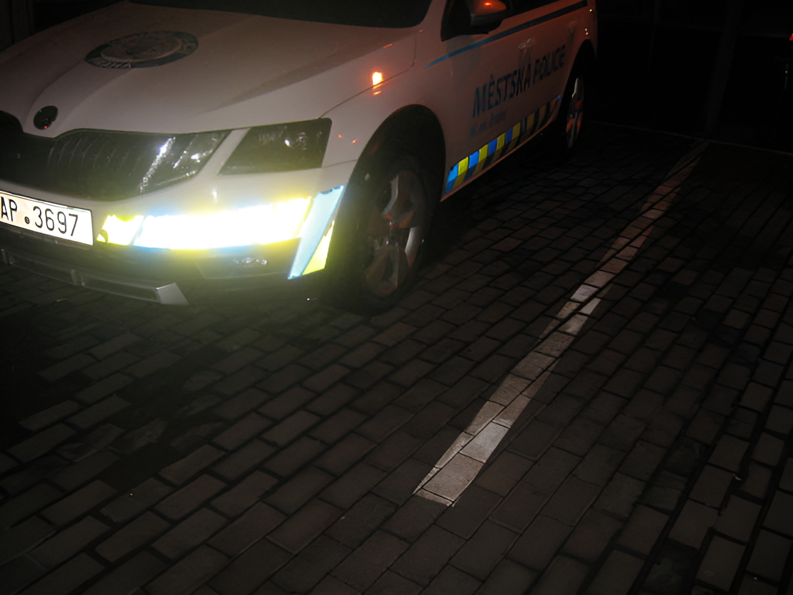

59.
We divide human drives into three groups: (1) those drives that can be satisfied with minimal effort; (2) those that can be satisfied but only at the cost of serious effort; (3) those that cannot be adequately satisfied no matter how much effort one makes. The power process is the process of satisfying the drives of the second group. The more drives there are in the third group, the more there is frustration, anger, eventually defeatism, depression, etc.